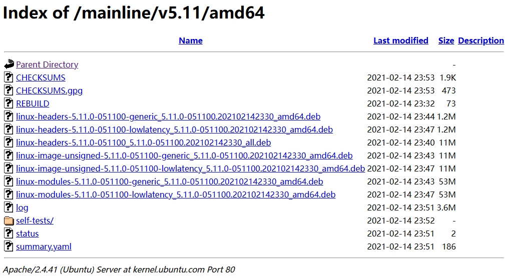
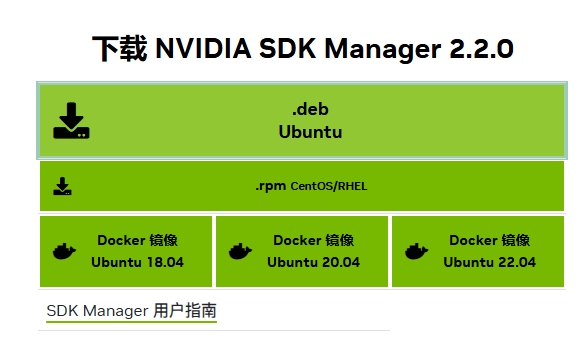
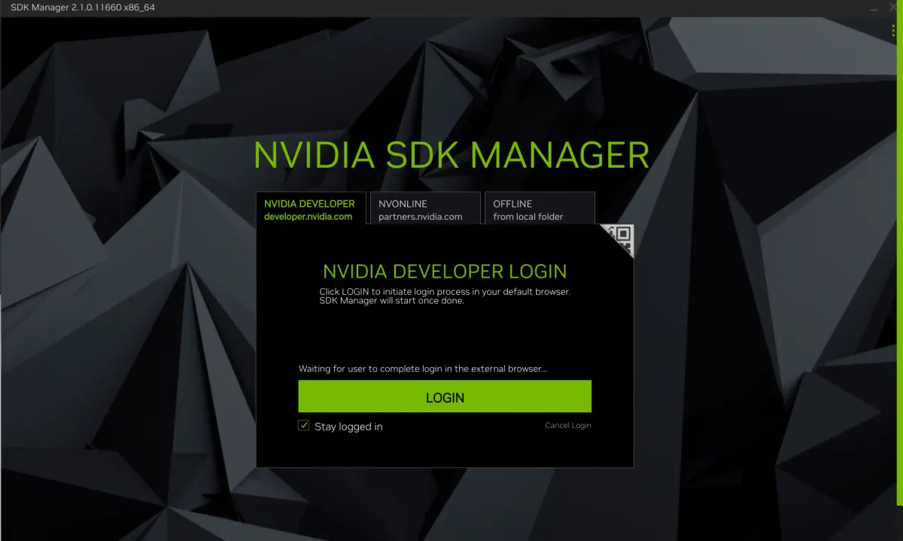

Nvidia Jetson AGX Orin 部署过程全记录——刷机
考虑到目前我们正在参与的重大项目主要使用 Nvidia Jetson AGX Orin 作为边缘计算设备，而Orin可能因为某些未知原因导致系统崩溃，因此对Orin进行刷机并配置环境是一件很频繁的工作。因此，本文将记录Orin的刷机过程，并记录刷机后的一些配置过程，以方便后续的刷机任务。
由于Orin的刷机及配置过程较为复杂，所以最好的方式其实是先做好一台完好的Orin，然后将其系统完整的制作成镜像，并统一刷到其他Orin上。总之无论如何我们也需要配置一台Orin，所以我们先来手动配置一遍这个过程。
刷机前
首先我们需要准备以下工具：
- 一台Orin
- 一台电脑，我们称其为主机
- 一根可以传输数据的Type-C数据线
对于主机来说，官方推荐使用Ubuntu 18.04进行刷机。为此，我们在这里补充一下Ubuntu 18.04安装可能会产生的问题。
不得不说的是，其实笔者尝试过在Ubuntu 20.04上进行刷机并成功，所以想要直接使用Ubuntu 20.04似乎也未尝不可。网上一些技术论坛中有人提到了一些随机产生的问题，可能会是Ubuntu 20.04导致的。笔者并未遇到此类问题，但不能保证Ubuntu 20.04一定可以成功，故本文仍推荐使用Ubuntu 18.04。
即使使用Ubuntu 20.04，本章内容或许仍有参考价值，故请酌情跳过。
推荐直接通过清华镜像源(👈这是一个超链接)获取系统镜像，也可以很方便的获取其他Ubuntu发行版的镜像文件。
安装Ubuntu 18.04的过程不再赘述，将一个U盘使用Ventoy制作成启动盘进行安装即可。截至本文撰写，Ubuntu 18.04已停止维护，所以未来随着硬件设备的不断更新，该系统可能出现的问题越来越多。
目前已知官方提供的Ubuntu 18.04镜像仍使用Linux Kernel 5.4，而随着硬件迭代，包括网卡在内的一系列驱动可能已无法正常使用。这里笔者推荐在安装过程中注意一下无线网卡或有线网卡是否能正常工作。如果不能，可以将手机打开USB共享网络，然后将手机连接到主机上以获取网络。在安装过程中，可以尝试勾选Install third-party software for graphics and Wi-Fi hardware选项，以获取更好的硬件支持。
进入Ubuntu 18.04后，需要第一时间升级内核以支持更多硬件设备（比如笔者使用的Intel AX210 无线网卡驱动就需要Linux Kernel 5.10以上版本）。
这一步是重中之重，否则可能缺少各种包（包括Nvidia显卡驱动）。
Ubuntu 18.04似乎并不能很方便的安装Linux Kernel 6+，所以这里我们安装Linux Kernel 5.11。访问Ubuntu官网获取我们需要的内核版本进行安装即可（这里给出的是5.11，但显然你可以改成任何已知版本）。

在这里我们选择第1、3、4、6个选项下载到本地（即不带lowlatency的版本），然后在终端中进入下载目录，执行sudo dpkg -i *.deb命令即可安装。安装完成之后重启系统即可。
内核的升级，会导致一些驱动包用不了，就导致耳机没声音，显示器黑屏，升级内核之后需要对驱动包做升级，可以使用命令：sudo ubuntu-drivers autoinstall来自动安装驱动。
刷机过程
按照Nvidia官方给出的刷机教程进行刷机。这里笔者推荐使用SDK Manager进行刷机，因为这样可以更方便的刷机，而且可以保证刷机的正确性。
安装SDK Manager

SDK Manager可以在官网上下载到（需要注册Nvidia账号才能下载）。下载完成后，直接通过sudo dpkg -i {SDK_MANAGER_NAME}.deb命令进行安装即可。
{SDK_MANAGER_NAME}替换成下载的文件名，别整的和没接触过Linux一样。
安装完成后，在终端中输入sdkmanager命令即可打开SDK Manager。输入NVIDIA账号登陆。

在SDK Manager中，我们需要选择Target Hardware，这里我们选择Jetson AGX Orin。Jetson版本这里我们选择JetPack 5.1.2。另外此处务必不要勾选Host Machine，会给你的主机装上Nvidia驱动。下面的DeepStream就随意了，笔者不建议装，没什么用。（图文不符以文字为准因为笔者也找的网图，谁边刷机边截图……）
将Orin进入恢复模式
首先将主机与Orin用USB转type-C线连接，type-C接Orin，使用下图接口，Orin先不要插上电源。
按官方人员给出的方法，我简单翻译在这里：
- 拔掉电源线，使主板断电。
- 重新插入电源线。
- 按住 Recovery（恢复）按钮。
- 按下并释放 Power（电源）按钮（此时仍需按住恢复按钮）。
- 释放 Recovery（恢复）按钮。
这时候Orin上的指示灯应会常亮。在主机命令行窗口输入lsusb，当显示... 7023 NVIDIA Corp字样，证明Orin成功进入恢复模式。
此时Orin并未进入系统，连接的显示器不会有任何显示，因此就不要连接显示器了。
刷机
接上Orin后，在SDK Manager中点击Continue按钮，勾选所有的CUDA组件，填写用户名和密码，安装到EMMC中，等待进度条完成即可。